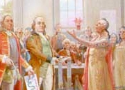

|
Benjamin Franklin in Albany
Peerless American Benjamin Franklin came to Albany at least twice and possibly another time during the eighteenth century. We hope to add to this exposition on Franklin in Albany in the future. In June 1754, accompanied by three others, he headed the Pennsylvania delegation to the Albany Congress. On his way from Philadelphia to Albany, Franklin later said that he "projected and drew a plan for the union of all the colonies under one government." Although the delegates at Albany finally approved the plan, it later would not be adopted by the separate provincial governments. Between June and November 1763, Deputy Postmaster Franklin visited post offices in New York and New England. Did he stop in Albany? Although seventy-years-old and suffering from boils, swollen legs, and dizziness, from the end of March to the end of May 1776, Franklin and a distinguished delegation of Revolutionaries including Charles and John Carroll undertook a diplomatic mission to Montreal on behalf of the Continental Congress. Marylander Charles Carroll described the trip in his journal. The party ascended the Hudson on a sloop and arrived
in Albany on April 6. In Albany, they were the guests of Philip
Schuyler, at his Albany home.
Carroll later reported
that they were treated with great civility in Albany. However, they do
not seem to have met formally with the Albany Committee.
Two days later, the delegates were carried
overland by wagon to Schuyler's country home at Saratoga, and from there
to Montreal by early May. By early June, Franklin had returned to Philadelphia.
From all accounts, a month in the wilderness nearly killed him! notes
Despite almost overwhelming temptation, this section is confined wholly to Franklin's direct and physical connection to Albany. Start with:
Google.com - and read forever.
This section was launched in support of a public program presented in Albany to a Franklin interest group in September 2009.
Home | Site Index | Navigation | Email | New York State Museum first opened: 6/1/09; last updated but still on the downlow 12/26/16 |